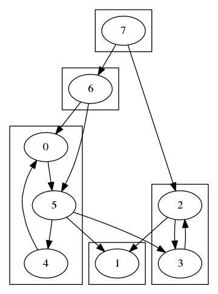

Project 3 report
宋小牛 PB15000301
Project 3 report实验要求实验环境文件、代码结构代码注释project1 强联通分量生成随机图算法代码project2 Johnson算法生成随机图算法代码运行脚本project1 强联通分量project2 Johnson算法运行方法project1project2实验分析project1结果运行时间project2结果运行时间
实验要求
实验环境
编译环境：gcc 5.4.0 on Ubuntu 16.04
CPU: Intel(R) Core(TM) i7-4710HQ, 2.50GHz
内存：8GB
配套软件：graphviz, GNU make
文件、代码结构
project1inputsize*：不同size的随机图输入input.txt：随机图数据，每行一个结点对，尾指向头
Makefile：编译、生成各个size的数据random.cc：生成随机图的源码
outputsize*：不同size的结果输出output1.txt：强联通分量的括号g.gv：原图的有向图代码，供graphviz使用sub.gv：将强联通分量建为子图的代码，供graphviz使用g.png：graphviz导出的原图图片sub.png：graphviz导出的带子图的图片
Makefile：用于一键生成图片
sourcemain.cc：计算强联通分量的源码Makefile：编译、运行各个size计算强联通分量
Makefile：在project1进行生成输入、计算子图、生成图片
代码注释
project1 强联通分量
生成随机图
xxxxxxxxxx// in_size 由编译指令指定// vertex_size为编译时确定的常量，从而可直接用于数组长度int main() { // 储存边的二维数组 std::array<std::array<bool, vertex_size>, vertex_size> edges = { {false} }; std::ofstream f; f.open("size" + std::to_string(in_size) + "/input.txt", std::ios::out); srand((unsigned)time(NULL)); // edge_size = vertex_size * log(vertex_size) int edge_size = vertex_size * (in_size + 2); for (int i = 0; i < edge_size; i++) { // 随机选取两个顶 int a = rand() % vertex_size; int b = rand() % vertex_size; // 两顶已相连，重新生成一对 while (a == b || edges[a][b] == true) { a = rand() % vertex_size; b = rand() % vertex_size; } // 有向图，故只置一个方向为true edges[a][b] = true; f << a << ' ' << b << std::endl; } f.close(); return 0;}算法代码
xxxxxxxxxx// finish_time有上限，用于进行计数排序// 颜色类型enum Color_e {WHITE = 0, GRAY, BLACK};// 图为一个bool类型的二维数组typedef bool Graph[vertex_size][vertex_size];// 开始时间、结束时间为一个无符号整数数组typedef std::array<unsigned int, vertex_size> Time;// 结点颜色类型typedef Color_e Color[vertex_size];// 结点列表类型typedef int Node_List[vertex_size];// 使用整数代表一个结点typedef int Vertex;// 第一遍深度优先遍历调用的递归函数，需使用color、完成时间void DFS_visit(Graph &G, Vertex u, int& time, Time& finish_time, Color& colors) { time++; // 不使用故不储存开始时间 colors[u] = GRAY; for (Vertex v = 0; v < vertex_size; v++) { if (G[u][v]) { if (colors[v] == WHITE) { DFS_visit(G, v, time, finish_time, colors); } } } colors[u] = BLACK; time++; finish_time[u] = time;}// 第一遍深度优先遍历Time DFS_finish(Graph &G) { Color colors; Time finish_time; for (int i = 0; i < vertex_size; i++) { colors[i] = WHITE; finish_time[i] = 0; } int time = 0; for (Vertex u = 0; u < vertex_size; u++) { if (colors[u] == WHITE) { DFS_visit(G, u, time, finish_time, colors); } } // 返回完成时间给上层使用 return finish_time;}// 第二遍深度优先遍历调用的递归函数，仅使用color， 同时将同一子树的结点放入一个集合中void DFS_visit(Graph &G, Vertex u, Color& colors, std::set<Vertex>& block) { colors[u] = GRAY; for (Vertex v = 0; v < vertex_size; v++) { if (G[u][v]) { if (colors[v] == WHITE) { block.insert(v); DFS_visit(G, v, colors, block); } } } colors[u] = BLACK;}// 第二遍深度优先遍历，按照完成时间降序来遍历图结点// list中为按照finish_time排好序的每个结点序号std::vector<std::set<Vertex>> DFS(Graph& G, Node_List& list) { Color colors; // 储存子图集合 std::vector<std::set<Vertex>> blocks; for (int i = 0; i < vertex_size; i++) { colors[i] = WHITE; } for (int i = 0; i < vertex_size; i++) { Vertex u = list[i]; if (colors[u] == WHITE) { // 结点u未被遍历，为其创建一个子图 std::set<Vertex> block; block.insert(u); DFS_visit(G, u, colors, block); blocks.push_back(block); } } return blocks;}int main() { Graph G = {{false}}; std::fstream input, print, output, time; input.open("../input/size" + std::to_string(in_size) + "/input.txt", std::ios_base::in); print.open("../output/size" + std::to_string(in_size) + "/g.gv", std::ios_base::out); time.open("../output/size" + std::to_string(in_size) + "/time1.txt", std::ios_base::out); print << "digraph G {\n"; Vertex u, v; // 从输入建立图 while (input >> u >> v) { G[u][v] = true; // 输出有向图信息到gv文件 print << " " << std::to_string(u) << " -> " << std::to_string(v) << ";\n"; } print << '}'; print.close(); //std::array<, vertex_size> f, d; Graph GT; // 计算图G的转置 for (int i = 0; i < vertex_size; i++) { for (int j = 0; j < vertex_size; j++) { GT[i][j] = G[j][i]; } } // 初始化finish_time unsigned int C[max_finish_time] = {0}; // 开始计时 auto start = std::chrono::system_clock::now(); // 第一遍深度优先遍历，储存完成时间到f Time f = std::move(DFS_finish(G)); // 使用计数排序给完成时间降序排序 Node_List nodes_by_decrease_f; for (Vertex u = 0; u < vertex_size; u++) { C[f[u]]++; } for (int i = max_finish_time - 2; i >= 0; i--) { C[i] += C[i + 1]; } for (Vertex u = 0; u < vertex_size; u++) { nodes_by_decrease_f[C[f[u]] - 1] = u; // 2 vertexs' finish_time can't be the same } // 第二遍深度优先遍历，保存一个集合vector，每个集合为一个强联通分量 std::vector<std::set<Vertex>> blocks(std::move(DFS(GT, nodes_by_decrease_f))); // 停止计时 auto end = std::chrono::system_clock::now(); auto duration = std::chrono::duration_cast<std::chrono::nanoseconds>(end - start); time << "total: " << double(duration.count()) * std::chrono::nanoseconds::period::num; // 输出强联通分量到文件 output.open("../output/size" + std::to_string(in_size) + "/output1.txt", std::ios_base::out); print.open("../output/size" + std::to_string(in_size) + "/sub.gv", std::ios_base::out); print << "digraph G {" << std::endl; int i = 0; // 导出output文件以及每个子图的内边 for (auto& block : blocks) { output << '('; print << " subgraph cluster" << i << " {" << std::endl; for (Vertex u : block) { output << u << " "; // 每个结点要单独输出到子图里，否则仅含一个结点的子图因为无边而显式为空子图 print << " " << u << ";" << std::endl; for (Vertex v : block) { if (G[u][v]) { print << " " << u << " -> " << v << ";" << std::endl; } } } print << " }" << std::endl; i++; output << ") "; } i = 0; // 导出子图间的边 for (auto& block_u : blocks) { i++; int j = 0; for (auto& block_v : blocks) { j++; if (i == j) { continue; } for (Vertex u : block_u) { for (Vertex v : block_v) { if (G[u][v]) { print << " " << u << " -> " << v << ";" << std::endl; } } } } } print << "}"; output.close(); print.close(); time.close();}project2 Johnson算法
生成随机图
xxxxxxxxxx// in_size 由编译指令指定// vertex_size为编译时确定的常量，从而可直接用于数组长度int main() { // 储存边是否存在的标志数组 bool connected[vertex_size][vertex_size] = {{false}}; // 储存边权值的数组 int edges[vertex_size][vertex_size]; std::ofstream f; f.open("size" + std::to_string(in_size) + "/input.txt", std::ios::out); srand((unsigned)time(NULL)); int log_vertex_size = in_size + 2; int edge_size = vertex_size * log_vertex_size; // 生成 log(V) 个负权值的边 for (int i = 0; i < log_vertex_size; i++) { int a = rand() % vertex_size; int b = rand() % vertex_size; while (a == b || connected[a][b] == true) { a = rand() % vertex_size; b = rand() % vertex_size; } connected[a][b] = true; // 权值范围为 -1 ~ -log(V) edges[a][b] = rand() % log_vertex_size - log_vertex_size; f << a << ' ' << b << ' ' << edges[a][b] << std::endl; } // 生成 (V-1)log(V) 个负权值的边 for (int i = log_vertex_size; i < edge_size; i++) { int a = rand() % vertex_size; int b = rand() % vertex_size; while (a == b || connected[a][b] == true) { a = rand() % vertex_size; b = rand() % vertex_size; } // 有向图，只置一个方向为true connected[a][b] = true; // 权值范围为 1 ~ V edges[a][b] = rand() % vertex_size + 1; f << a << ' ' << b << ' ' << edges[a][b] << std::endl; } f.close(); return 0;}算法代码
xxxxxxxxxx// 顶数// 增加新顶后的顶数// 两种图类型typedef int Graph[vertex_size][vertex_size];typedef int Graph_1[vertex_size_1][vertex_size_1];typedef int Node_List[vertex_size];typedef int Node_List_1[vertex_size_1];typedef int Vertex;// BF算法，输入图顶数为原图大小+1bool bellman_ford(Graph_1 G, Vertex s, Node_List_1& d) { for (int i = 0; i < vertex_size_1; i++) { d[i] = INT32_MAX; } d[s] = 0; for (int i = 1; i < vertex_size_1; i++) { // 每一轮对每边进行松弛 for (Vertex u = 0; u < vertex_size_1; u++) { for (Vertex v = 0; v < vertex_size_1; v++) { if (G[u][v] == INT32_MAX) continue; if (d[u] == INT32_MAX) continue; if (d[v] > d[u] + G[u][v]) { d[v] = d[u] + G[u][v]; } } } } // 对每边判断是否还能继续松弛 for (Vertex u = 0; u < vertex_size_1; u++) { for (Vertex v = 0; v < vertex_size_1; v++) { if (G[u][v] == INT32_MAX) continue; if (d[u] == INT32_MAX) continue; if (d[u] != INT32_MAX && v[d] == INT32_MAX || d[u] + G[u][v] < d[v]) return false; } } return true;}// 用于dijkstra的二叉堆，每个结点的key值d以数组的形式存于堆中class Heap {public: // 从s开始的dijkstra， d置为0 Heap(Vertex s) { for (int i = 0; i < vertex_size; i++) { d[i] = INT32_MAX; Vertexs[i] = i; index[i] = i; } d[s] = 0; // s为最小元素，放到开头，其余元素均相同，故此时已是一个最小堆 Vertexs[0] = s; Vertexs[s] = 0; index[s] = 0; index[0] = s; size = vertex_size; } inline Vertex parent (Vertex u) { return (u - 1) >> 1; } inline Vertex left (Vertex u) { return (u << 1) + 1; } inline Vertex right (Vertex u) { return (u + 1) << 1; } // 维护该结点对应子树的最小堆性质 void min_heapify(Vertex i) { int max_parent = (size >> 1) - 1; // 当i是一个内部结点 while (i <= max_parent) { // 此时i必有左孩子 int min = i; // 找到i left(i) right(i) 中d最小 if (d[Vertexs[min]] > d[Vertexs[left(i)]]) { min = left(i); } // right可能不存在 if (right(i) < size && d[Vertexs[min]] > d[Vertexs[right(i)]]) { min = right(i); } if (min == i) break; // 交换min和i的位置 Vertex t = Vertexs[min]; Vertexs[min] = Vertexs[i]; Vertexs[i] = t; // 更新index index[t] = i; index[Vertexs[min]] = min; i = min; } } Vertex extract_min() { size--; // 与最后一个元素交换位置 Vertex t = Vertexs[size]; Vertexs[size] = Vertexs[0]; Vertexs[0] = t; index[t] = 0; index[Vertexs[size]] = size; // 维护性质 min_heapify(0); return Vertexs[size]; } void decrease(Vertex u, int k) { // 这里传入的是结点，不是Vertexs中的偏移 d[u] = k; int i = index[u]; // 迭代上移直到不影响堆性质 while (i > 0 && d[Vertexs[parent(i)]] > d[u]) { int t = Vertexs[parent(i)]; Vertexs[parent(i)] = u; Vertexs[index[u]] = t; index[t] = index[u]; index[u] = parent(i); i = index[u]; } } // Vertexs：储存堆的数组，每一个元素为结点 Node_List Vertexs; // d：储存每个结点与开始结点的距离上界 Node_List d; // index：每个结点对应Vertexs中的哪一个偏移，用于快速索引 // a vertex u, Vertex[i] = u, d[u] = u.d // index[Vertexs[i]] = i // Vertexs[index[u]] = u Node_List index; int size;};// dijkstra算法，维护一个传入的储存先驱的数组bool dijkstra(Graph G, Vertex s, Node_List& precursor) { bool S[vertex_size] = {false}; Heap H(s); while (H.size > 0) { Vertex u = H.extract_min(); S[u] = true; // u的d为正无穷，说明s到u不可达，不联通 if (H.d[u] == INT32_MAX) { return false; } for (Vertex v = 0; v < vertex_size; v++) { // v已找到最短路径，或uv不相邻，不松弛 if (S[v]) continue; if (G[u][v] == INT32_MAX) continue; if (H.d[v] > H.d[u] + G[u][v]) { H.decrease(v, H.d[u] + G[u][v]); precursor[v] = u; } } } // 置开始结点的先驱，用于在递归生成路径中判断 precursor[s] = s; return true;}std::string recursive_path(Vertex u, Vertex s, Node_List &precursor, int &distance, Graph_1 &G) { // 储存路径字符串、长度 // 带备忘的递归 static std::string str[vertex_size][vertex_size]; static int distances[vertex_size][vertex_size]; if (str[s][u].size() == 0) { if (u == precursor[u]) { // 路径开头 str[s][u] = std::to_string(u); distances[s][u] = 0; } else { // 取前驱的字符串并街上自己 str[s][u] = recursive_path(precursor[u], s, precursor, distance, G) + ", " + std::to_string(u); distances[s][u] = distances[s][precursor[u]] + G[precursor[u]][u]; } } distance = distances[s][u]; return str[s][u];}int main() { std::fstream input, print, output, time; // 读入图 input.open("../input/size" + std::to_string(in_size) + "/input.txt", std::ios_base::in); // 输出原图 print.open("../output/size" + std::to_string(in_size) + "/g.gv", std::ios_base::out); time.open("../output/size" + std::to_string(in_size) + "/time2.txt", std::ios_base::out); Graph G; print << "digraph G {" << std::endl; // G1为加上s结点的图，用于计算新权 Graph_1 G1; // 初始化各边为不联通 for (int i = 0; i < vertex_size; i++) { int j = 0; for (; j < vertex_size; j++) { G[i][j] = G1[i][j] = INT32_MAX; } // 从原各结点到新结点不存在边 G1[i][vertex_size] = INT32_MAX; } // 从新结点到各个结点权为0 for (int i = 0; i < vertex_size; i++) { G1[vertex_size][i] = 0; } G1[vertex_size][vertex_size] = INT32_MAX; Vertex u, v; // 读入所有权，同时输出到绘图文件 while (input >> u) { input >> v; int weight; input >> weight; G[u][v] = G1[u][v] = weight; print << " " << u << " -> " << v << " [label = " << weight << "];" << std::endl; } print << "}"; print.close(); Node_List_1 h; // 使用BF算法计算h数组 auto start = std::chrono::system_clock::now(); if (!bellman_ford(G1, vertex_size, h)) { std::cerr << "negative weight cycle detected" << std::endl; return 0; } // 计算新权 for (Vertex u = 0; u < vertex_size; u++) { for (Vertex v = 0; v < vertex_size; v++) { if (G[u][v] != INT32_MAX) { G[u][v] += h[u] - h[v]; } } } // 设置V个结点数组，用于储存每个结点为根时的最短路径树 Node_List precursors[vertex_size]; for (Vertex u = 0; u < vertex_size; u++) { if (!dijkstra(G, u, precursors[u])) { // 原图不强联通 std::cerr << "unconnected graph" << std::endl; } } auto end = std::chrono::system_clock::now(); auto duration = std::chrono::duration_cast<std::chrono::nanoseconds>(end - start); time << "total: " << double(duration.count()) * std::chrono::nanoseconds::period::num; output.open("../output/size" + std::to_string(in_size) + "/output2.txt", std::ios_base::out); // 输出u到u1的最短路径 for (Vertex u = 0; u < vertex_size; u++) { for (Vertex u1 = 0; u1 < vertex_size; u1++) { int distance = 0; output << u << " -> " << u1 << " : {" << recursive_path(u1, u, precursors[u], distance, G1) << "} = "; output << distance << std::endl; } } // 对于size1与size2输出以每个顶为起始顶的最短路径树 // 对于更大的size，输出图片已难以辨认，故不做输出。有需要时添加判断式即可 if (in_size == 1 || in_size == 2) { for (Vertex u = 0; u < vertex_size; u++) { print.open("../output/size" + std::to_string(in_size) + "/start" + std::to_string(u) + ".gv", std::ios_base::out); print << "digraph G {" << std::endl; print << " " << u << "[style = diagonals];" << std::endl; for (Vertex u1 = 0; u1 < vertex_size; u1++) { for (Vertex v = 0; v < vertex_size; v++) { if (G[u1][v] == INT32_MAX) continue; print << " " << u1 << " -> " << v << " [label = " << G1[u1][v] << "]"; if (precursors[u][v] == u1) { print << " [style = bold]"; } print << ";" << std::endl; } } print << "}"; print.close(); system(("dot -Tpng ../output/size" + std::to_string(in_size) + "/start" + std::to_string(u) + ".gv -o ../output/size" + std::to_string(in_size) + "/start" + std::to_string(u) + ".png").c_str()); } } input.close(); output.close(); time.close();}运行脚本
project1 强联通分量
各个文件夹的makefile如下
project1
xxxxxxxxxx.PHONY: input clean_inputinput:$(MAKE) -C./input allclean_input:$(MAKE) -C./input cleanrun:$(MAKE) -C./source allpng:$(MAKE) -C./output allinput
xxxxxxxxxx.PHONY: all 1 2 3 4 5 6all: 1 2 3 4 5 61: random.ccg++ random.cc -std=c++11 -Din_size=1./a.out2: random.ccg++ random.cc -std=c++11 -Din_size=2./a.out3: random.ccg++ random.cc -std=c++11 -Din_size=3./a.out4: random.ccg++ random.cc -std=c++11 -Din_size=4./a.out5: random.ccg++ random.cc -std=c++11 -Din_size=5./a.out6: random.ccg++ random.cc -std=c++11 -Din_size=6./a.outclean:find . -name "*.txt" -exec rm -r {} \;rm a.outsource
xxxxxxxxxx.PHONY: 1 2 3 4 5 6 allall: 1 2 3 4 5 61:g++ main.cc -std=c++11 -g -Din_size=1./a.out2:g++ main.cc -std=c++11 -g -Din_size=2./a.out3:g++ main.cc -std=c++11 -g -Din_size=3./a.out4:g++ main.cc -std=c++11 -g -Din_size=4./a.out5:g++ main.cc -std=c++11 -g -Din_size=5./a.out6:g++ main.cc -std=c++11 -g -Din_size=6./a.outoutput
xxxxxxxxxx.PHONY: 1 2 3 4 5 6 all# 5 6生成图过大，且4的时候已经无法看清，故只生成1 2 3 4大小all: 1 2 3 41:size1/g.gv size1/sub.gvdot -Tpng ./size1/g.gv -o ./size1/g.pngdot -Tpng ./size1/sub.gv -o ./size1/sub.png2:size1/g.gvdot -Tpng ./size2/g.gv -o ./size2/g.pngdot -Tpng ./size2/sub.gv -o ./size2/sub.png3:size1/g.gvdot -Tpng ./size3/g.gv -o ./size3/g.pngdot -Tpng ./size3/sub.gv -o ./size3/sub.png4:size1/g.gvdot -Tpng ./size4/g.gv -o ./size4/g.pngdot -Tpng ./size4/sub.gv -o ./size4/sub.png5:size1/g.gvdot -Tpng ./size5/g.gv -o ./size5/g.pngdot -Tpng ./size5/sub.gv -o ./size5/sub.png6:size1/g.gvdot -Tpng ./size6/g.gv -o ./size6/g.pngdot -Tpng ./size6/sub.gv -o ./size6/sub.png
project2 Johnson算法
各个文件夹的makefile如下
project2
xxxxxxxxxx.PHONY: input clean_inputinput:$(MAKE) -C./input allclean_input:$(MAKE) -C./input cleanrun:$(MAKE) -C./source allpng:$(MAKE) -C./output allinput
xxxxxxxxxx.PHONY: all 1 2 3 4 5 6all: 1 2 3 4 5 61: random.ccg++ random.cc -std=c++11 -Din_size=1./a.out2: random.ccg++ random.cc -std=c++11 -Din_size=2./a.out3: random.ccg++ random.cc -std=c++11 -Din_size=3./a.out4: random.ccg++ random.cc -std=c++11 -Din_size=4./a.out5: random.ccg++ random.cc -std=c++11 -Din_size=5./a.out6: random.ccg++ random.cc -std=c++11 -Din_size=6./a.outclean:find . -name "*.txt" -exec rm -r {} \;rm a.outsource
xxxxxxxxxx.PHONY: 1 2 3 4 5 6 allall: 1 2 3 4 5 61:g++ main.cc -std=c++11 -g -Din_size=1./a.out2:g++ main.cc -std=c++11 -g -Din_size=2./a.out3:g++ main.cc -std=c++11 -g -Din_size=3./a.out4:g++ main.cc -std=c++11 -g -Din_size=4./a.out5:g++ main.cc -std=c++11 -g -Din_size=5./a.out6:g++ main.cc -std=c++11 -g -Din_size=6./a.outoutput
xxxxxxxxxx.PHONY: 1 2 3 4 5 6 all# 5 6生成图过大，且4的时候已经无法看清，故只生成1 2 3 4大小all: 1 2 3 41:size1/g.gvdot -Tpng ./size1/g.gv -o ./size1/g.png# dot -Tpng ./size1/sub.gv -o ./size1/sub.png2:size1/g.gvdot -Tpng ./size2/g.gv -o ./size2/g.png# dot -Tpng ./size2/sub.gv -o ./size2/sub.png3:size1/g.gvdot -Tpng ./size3/g.gv -o ./size3/g.png# dot -Tpng ./size3/sub.gv -o ./size3/sub.png4:size1/g.gvdot -Tpng ./size4/g.gv -o ./size4/g.png# dot -Tpng ./size4/sub.gv -o ./size4/sub.png5:size1/g.gvdot -Tpng ./size5/g.gv -o ./size5/g.png# dot -Tpng ./size5/sub.gv -o ./size5/sub.png6:size1/g.gvdot -Tpng ./size6/g.gv -o ./size6/g.png# dot -Tpng ./size6/sub.gv -o ./size6/sub.png
运行方法
project1
xxxxxxxxxx~/Project4/project1$ make input~/Project4/project1$ make run~/Project4/project1$ make pngproject2
xxxxxxxxxx~/Project4/project2$ make input~/Project4/project2$ make run~/Project4/project2$ make png实验分析
project1
结果
以size2为例，共16个结点

强联通分量为：(0 1 2 3 4 5 6 8 9 10 12 13 14 15 ) (11 ) (7 )
画出的子图为

为构造一个更显然的例子，以size1的顶数，生成更少的边project1/example.txt:
5 4
7 2
3 2
4 0
0 5
6 5
7 6
6 0
2 1
5 1
5 3
2 3
图为

强联通分量文本为(7 ) (6 ) (0 4 5 ) (2 3 ) (1 )
子图表示的强联通分量为

运行时间
| size | 1 | 2 | 3 | 4 | 5 | 6 |
|---|---|---|---|---|---|---|
| vertex | 8 | 16 | 32 | 64 | 128 | 256 |
| time/ns | 10020 | 23274 | 39045 | 69894 | 193938 | 503409 |
对time做一个基本的拟合：
| size | 1 | 2 | 3 | 4 | 5 | 6 |
|---|---|---|---|---|---|---|
| vertex | 8 | 16 | 32 | 64 | 128 | 256 |
| time/ns | 10020 | 23274 | 39045 | 69894 | 193938 | 503409 |
| time' | 6400 | 16000 | 38400 | 89600 | 204800 | 460800 |
作图如下

可见基本重合，符合复杂度
project2
结果
以size1为例，共8个结点

最短路径为
0 -> 0 : {0} = 0
0 -> 1 : {0, 1} = 2
0 -> 2 : {0, 1, 2} = 4
0 -> 3 : {0, 4, 3} = 11
0 -> 4 : {0, 4} = 5
0 -> 5 : {0, 1, 5} = 6
0 -> 6 : {0, 1, 2, 6} = 8
0 -> 7 : {0, 1, 5, 7} = 5
1 -> 0 : {1, 5, 0} = 1
1 -> 1 : {1} = 0
1 -> 2 : {1, 2} = 2
1 -> 3 : {1, 4, 3} = 11
1 -> 4 : {1, 4} = 5
1 -> 5 : {1, 5} = 4
1 -> 6 : {1, 2, 6} = 6
1 -> 7 : {1, 5, 7} = 3
2 -> 0 : {2, 6, 4, 5, 0} = 6
2 -> 1 : {2, 1} = 7
2 -> 2 : {2} = 0
2 -> 3 : {2, 6, 4, 3} = 14
2 -> 4 : {2, 6, 4} = 8
2 -> 5 : {2, 6, 4, 5} = 9
2 -> 6 : {2, 6} = 4
2 -> 7 : {2, 6, 7} = 8
3 -> 0 : {3, 6, 4, 5, 0} = 3
3 -> 1 : {3, 6, 4, 1} = 4
3 -> 2 : {3, 6, 4, 1, 2} = 6
3 -> 3 : {3} = 0
3 -> 4 : {3, 6, 4} = 5
3 -> 5 : {3, 6, 4, 5} = 6
3 -> 6 : {3, 6} = 1
3 -> 7 : {3, 6, 7} = 5
4 -> 0 : {4, 5, 0} = -2
4 -> 1 : {4, 1} = -1
4 -> 2 : {4, 1, 2} = 1
4 -> 3 : {4, 3} = 6
4 -> 4 : {4} = 0
4 -> 5 : {4, 5} = 1
4 -> 6 : {4, 1, 2, 6} = 5
4 -> 7 : {4, 5, 7} = 0
5 -> 0 : {5, 0} = -3
5 -> 1 : {5, 0, 1} = -1
5 -> 2 : {5, 0, 1, 2} = 1
5 -> 3 : {5, 7, 4, 3} = 7
5 -> 4 : {5, 7, 4} = 1
5 -> 5 : {5} = 0
5 -> 6 : {5, 0, 1, 2, 6} = 5
5 -> 7 : {5, 7} = -1
6 -> 0 : {6, 4, 5, 0} = 2
6 -> 1 : {6, 4, 1} = 3
6 -> 2 : {6, 4, 1, 2} = 5
6 -> 3 : {6, 4, 3} = 10
6 -> 4 : {6, 4} = 4
6 -> 5 : {6, 4, 5} = 5
6 -> 6 : {6} = 0
6 -> 7 : {6, 7} = 4
7 -> 0 : {7, 4, 5, 0} = 0
7 -> 1 : {7, 4, 1} = 1
7 -> 2 : {7, 4, 1, 2} = 3
7 -> 3 : {7, 4, 3} = 8
7 -> 4 : {7, 4} = 2
7 -> 5 : {7, 4, 5} = 3
7 -> 6 : {7, 4, 1, 2, 6} = 7
7 -> 7 : {7} = 0
以0结点开始为例，其最短路径树为

现对这一结果进行推导
新建s结点，运行BF算法，得到的h数组
| Vertex | 0 | 1 | 2 | 3 | 4 | 5 | 6 | 7 |
|---|---|---|---|---|---|---|---|---|
| h | -3 | -1 | 0 | 0 | 0 | 0 | 0 | -1 |
生成的新权值为

在其上运行dijkstra算法，以0为起始结点
| Time | 0 | 1 | 2 | 3 | 4 | 5 | 6 | 7 | |
|---|---|---|---|---|---|---|---|---|---|
| d[0] | 0 | ||||||||
| d[1] | 0 | 0 | |||||||
| d[2] | 1 | 1 | |||||||
| d[3] | 8 | 8 | 8 | 8 | 4 | ||||
| d[4] | 2 | 2 | 2 | 0 | |||||
| d[5] | 3 | 3 | 3 | 1 | |||||
| d[6] | 5 | 5 | 5 | 5 | 2 | ||||
| d[7] | 5 | 5 | 5 | 3 | 5 |
前缀生成的子图即为图中的红边，即为最短路，结果正确
运行时间
| size | 1 | 2 | 3 | 4 | 5 | 6 |
|---|---|---|---|---|---|---|
| time/ns | 20510 | 86195 | 618523 | 3784700 | 20748300 | 129415000 |
时间曲线